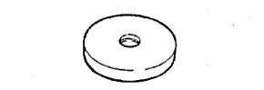

Transfer ASSY (4WD) Preparation [Assembly]
 | 09223-00010 | Cover & Seal Riper |
 | 09316-20011 | Transfer bearing Replayer |
 | 09316-60011 | Transmission & transmission Fur bearing player |
 | (09316-00011) | Replayer pipe |
 | 09325-20010 | Transmission oil plug |
 | 09326-20011 | Output shaft bearing Rock nut wrench |
 | 09506-30012 | Differential drive Pinoon rear bearing corn Replayer |
 | 09556-16030 | Differential Drive pinion Horeding Tsu Le 28 |
 | 09726-40010 | Lower arm shaft bearing Replayer |
 | 09950-60010 | Replayer set |
 | (09951-00350) | Replacer 35 |
 | (09951-00510) | Replacer 51 |
 | (09951-00580) | Replacer 58 |
 | (09951-00600) | Replacer 60 |
 | (09951-00610) | Replacer 61 |
| (09951-00650) | Replacer 65 | |
 | (09952-06010) | adapter |
 | 09950-60020 | Replacer set No.2 |
| (09951-00680) | Replacer 68 | |
|  | (09951-00810) | Replacer 81 |
 | 09950-70010 | Handle set |
 | (09951-07150) | Handle 150 |
 | (09951-07200) | Handle 200 |
| Plastic hammer | ||
| Noogis (0-200mm) | ||
| Thermometer | ||
 | 2046-08 | Dial gauge (10mm) Treated as Banzai Co., Ltd. |
| TM-110 | Dial gauge (10mm) Treatment of Iyasaka Co., Ltd. |
 | MB-B | Magnetic base Banzai Co., Ltd. |
 | QL-100N | QL Torque wrench (100N) Banzai Co., Ltd. |
| QL-50N | QL Torque wrench (50N) Banzai Co., Ltd. |
 | (09612-10061) | Steering pinion bearing Replayser |
| QLE-550N | QL Torque wrench (550N) Banzai Co., Ltd. | |
 | SF3N | F -type torque wrench (3n · m) Banzai Co., Ltd. |
| SF6N | F -type torque wrench (6n · m) Banzai Co., Ltd. |
| Toyota genuine MP grease No.2 | ||
| Toyota genuine high poiid gear oil LSD | ||
| Toyota genuine gear oil supermarket | ||
| White gasoline | ||
| Heater | ||
| Gwangmyan | ||
| Fragment | ||
| bolt (M12 × P1.25 Length 186mm) 90101-12159 | ||
| Nut (M12 x P1.25) 90179-12051 | ||
| Seal packing 1281 V93500111 Treated as a takty Co., Ltd. |